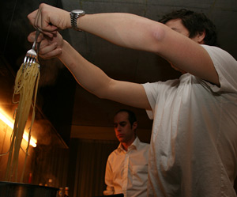

Pasta all arrabiata
5 von 6Knoblauch in Olivenöl erhitzen. Pelati und etwas Peperoncini und Bouillon beigeben. Mit Pfeffer und Petersilie abschmecken.

Knoblauch in Olivenöl erhitzen. Pelati und etwas Peperoncini und Bouillon beigeben. Mit Pfeffer und Petersilie abschmecken.

Montagsplausch Nr. 219. Der Abend hiess «Michis Pasta».